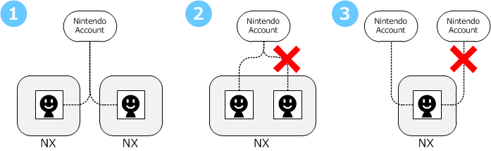

With the exception of system updates and a few other things, users must be linked to Nintendo Accounts to use the NX network features.
The chief characteristics of Nintendo Accounts are as follows. (For more information, see https://accounts.nintendo.com/.)
A link to a Nintendo Account can be set for each user on the NX. After an account has been logged in to on the NX, there is no need to log in again (to reenter a password), aside from a few exceptions like certain errors.
By linking to a Nintendo Account, not only will users be able to play online games on the NX, but they will also be able to use services like the following to which the link is made external to the NX.
The link between a user and a Nintendo Account can be removed at any time. After the link has been removed, the user can link to a different Nintendo Account. (The operating policy might put a limit on how often this can be done.)
A single Nintendo Account can be linked to multiple NX systems. (See Fig. 1) When multiple NX systems link to the same Nintendo Account, the user nickname and icon is synchronized across systems. However, the application's save data is not automatically synchronized across systems. On the other hand, it is not possible to either link multiple users to the same Nintendo Account on the same NX system (Figure 2), or to link one user to multiple Nintendo Accounts (Figure 3).

CONFIDENTIAL